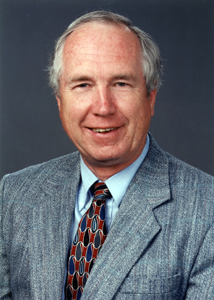

|

|
Don Gurnett
University of Iowa
Public Lecture
6:30 p.m., Thursday,February 6, 2014
Tate Laboratory of Physics, Room 150, Van Vleck Auditorium
"The Epic Journey of Voyager 1 into Interstellar Space "
Stream the lecture now.
Colloquium:
3:35 p.m., Tate Lab of Physics 150, Van Vleck Auditorium
The peculiar rotational modulation of Saturn's magnetosphere.
|